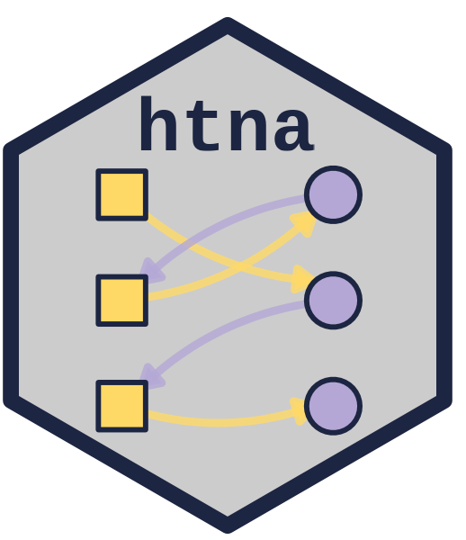

Association Rule Mining over Transitions
Source:R/association_rules_htna.R
association_rules_htna.Rdhtna-named wrapper for Nestimate::association_rules(). Mines
frequent itemsets and association rules over a transition-count
matrix under support / confidence / lift thresholds.
Arguments
- x
A transition-count matrix or an htna network. See
Nestimate::association_rules().- ...
Additional arguments passed to
Nestimate::association_rules(), such asmin_support,min_confidence,min_lift, andmax_length. See that function for the full, current argument list.
Value
An object of class net_association_rules, holding the
discovered rules and frequent itemsets, with print(), summary()
and plot() methods supplied by Nestimate. See
Nestimate::association_rules() for the component list.
Details
Foundation function in the htna-aware exploratory family. Works on
transition-count input produced by frequencies_htna() or
Nestimate::build_network(); the rules carry over to htna networks
since the underlying transition counts are the same.
Suffixed _htna to avoid clashing with
Nestimate::association_rules() when both packages are loaded.
Examples
data(human_ai)
net <- build_htna(human_ai, actor_type = "actor_type")
#> Metadata aggregated per session: ties resolved by first occurrence in 'session_date' (1 sessions), 'cluster' (42 sessions), 'actor_type' (24 sessions)
association_rules_htna(net, max_length = 3L)
#> Association Rules [1054 rules | 12 items | 429 transactions]
#> Support >= 0.10 | Confidence >= 0.50 | Lift >= 1.00
#>
#> Top rules (by lift):
#> 1. Repair -> Inquire, Report (sup=0.217 conf=0.721 lift=1.65)
#> 2. Repair -> Check, Report (sup=0.233 conf=0.775 lift=1.61)
#> 3. Inquire, Repair -> Report (sup=0.217 conf=0.861 lift=1.56)
#> 4. Repair -> Refine, Report (sup=0.166 conf=0.550 lift=1.55)
#> 5. Repair -> Inquire, Refine (sup=0.172 conf=0.574 lift=1.55)
#> 6. Repair -> Execute, Report (sup=0.245 conf=0.814 lift=1.55)
#> 7. Repair -> Frustrate, Report (sup=0.245 conf=0.814 lift=1.52)
#> 8. Repair -> Plan, Report (sup=0.245 conf=0.814 lift=1.52)
#> 9. Check, Repair -> Report (sup=0.233 conf=0.840 lift=1.52)
#> 10. Execute, Repair -> Report (sup=0.245 conf=0.840 lift=1.52)
#> ... and 1044 more rules